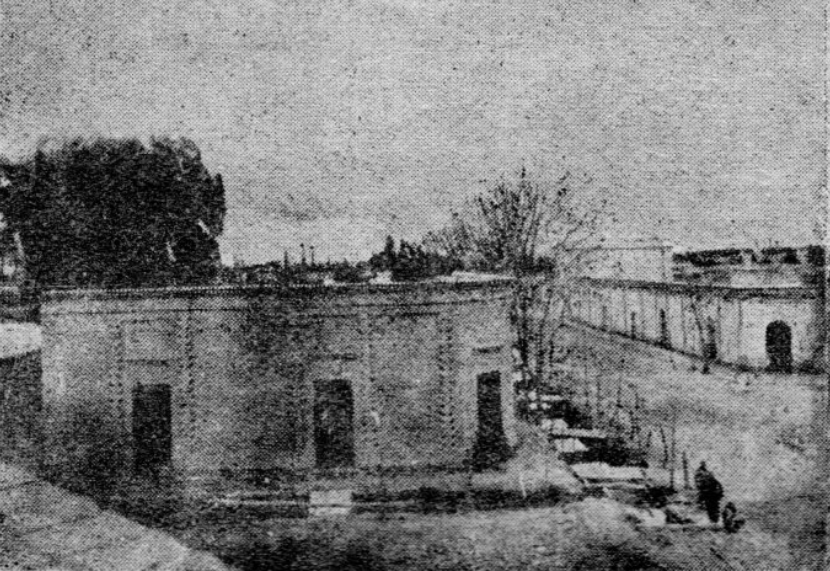

.png)
ESCUELA PROVINCIAL DE EDUCACIÓN TÉCNICA - EPET N°1 DE CAUCETE

HISTORIA DE LA INSTITUCIÓN
El 15 de noviembre de 1937 se organizó formalmente como institución lo que luego sería la Escuela Provincial de Educación Técnica (E.P.E.T.) Nº 1 “Ingeniero Rogelio Boero”. Nació como Escuela de Artes y Oficios en Villa Colón, nombre con el que entonces se conocía la actual ciudad de Caucete.
El terremoto de 1944 destruyó el edificio precario donde funcionaba la Escuela de Artes y Oficios. Ante el riesgo de no poder seguir dictando clases, se gestiono el traslado de la escuela a Trinidad Capital
El cambio de ubicación fue también de nombre, ya que en ese momento pasó a llamarse Escuela Técnica de Oficios; más adelante, aún funcionando en el mismo predio, ese nombre sería reemplazado por el de Escuela Industrial-Ciclo Medio, en 1965, se agregó a la sigla E.N.E.T. (ESCUELA NACIONAL DE EDUCACIONAL TÉCNICA N°1)
Ese mismo año de la Escuela Boero se desprendieron tres anexos que después serían escuelas independientes: las E.P.E.T. Nº 1 de Caucete, Nº 3 de Rawson y Nº 8 de Santa Lucía.
La actual denominación de E.P.E.T. ( Escuela Provincial de Educación Técnica)Nº1 Ingeniero Rogelio A. Boero deriva de la Ley 24.049 «Transferencia de los Servicios Educativos Nacionales a las Provincias», en 1992 modifica su sigla, determinando la dependencia de la provincia en lugar de la nación.
TRAYECTORIA
El día 5 de marzo de 1979, el Ministro de Educación de la Nación deja inaugurado el nuevo edificio escolar de la E.N.E.T Nº 1 de Caucete.
En el ciclo lectivo de 1980 queda habilitado el Ciclo Superior de la Especialidad de Construcciones, que empieza a funcionar con una división de 1er. año Ciclo Superior y del que se obtiene el título de Maestro Mayor de Obras.
En el ciclo lectivo 1983, con una división de 1er. año ciclo superior, se implementa la segunda especialidad de la escuela, cuyos egresados recibirán el título Técnico Mecánico con Orientación en Máquinas Agrícolas.
En 1988, el 12 de octubre se lleva a cabo la primera Muestra Didáctica y de Trabajos Prácticos de la escuela, fuera del establecimiento, como un gestión socio-cultural, y el 18 de noviembre la escuela realiza y promueve la primera Maratón Intercolegial con motivo de celebrarse la semana de la Educación Técnica. A partir de julio de 1992, la escuela pasa a depender de la Jurisdicción Provincial, dejando de pertenecer al CONET, correspondiendo a partir del ciclo lectivo de 1993 la sigla E.P.E.T Nº 1 de Caucete (Escuela Provincial de Educación Técnica).
En el año 1997 se llevó a cabo diversas campañas promocionando nuestra escuela; se realizaron visitas a establecimientos primarios de la zona de una manera más intensa que en años anteriores, también se efectuaron visitas domiciliarias a alumnos desertores.
Todo este accionar motivó el aumento de la matrícula y dio estabilidad al número de divisiones existentes, siendo de esta manera nuestra escuela la única en el medio que mantuvo la planta funcional, evitando el cierre de divisiones y el desplazamiento de docentes.
Durante el ciclo lectivo 1999 la institución participó del Proyecto Educativo Crédito Fiscal que permitió la incorporación de tres computadoras al Laboratorio de Informática.
En el año 2000 la EPET Nº 1 de Caucete cumple veinticinco años de servicio educativo previéndose eventos importantes para recordar lo realizado y reforzar el compromiso de seguir creciendo en calidad acorde a los tiempos.
La EPET Nº 1 de Caucete tuvo participación el 23 de septiembre de 2004 en las Olimpiadas Nacionales de Contenidos Educativos en Internet (ONI 2004), realizadas en Buenos Aires. Dicho certamen fue organizado por el INET (Instituto Nacional de Educación Tecnológica) y tiene como objetivo estimular la investigación y el desarrollo creativo de recursos didácticos multimediales.